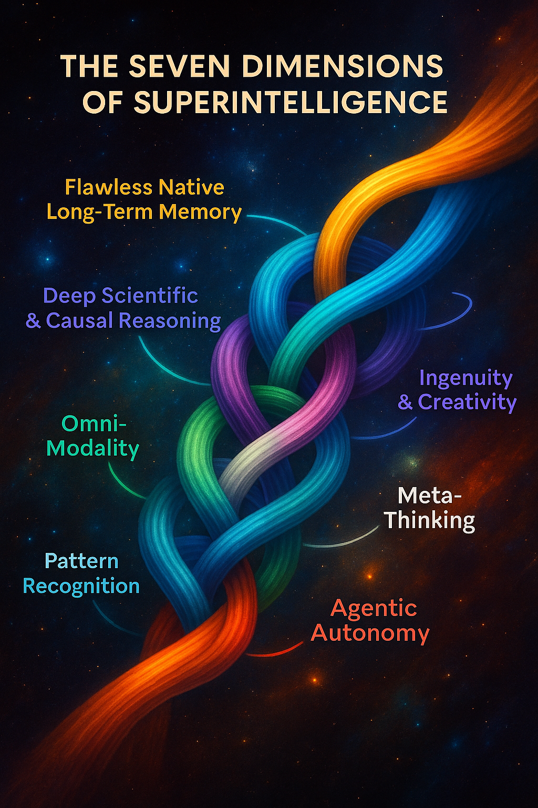

1️⃣ Table of Contents at the top
Table of Contents
The Seven Dimensions of Intelligence: What SOTA R&D Is Really Building
The purpose of this framework is to give the field of artificial intelligence what it currently lacks:
a structured, empirical language for describing progress toward general intelligence.
Benchmarks measure performance; architectures measure design.
But until now, we’ve had no unified system for measuring cognitive distance — how far today’s models are from true generality across reasoning, memory, autonomy, and abstraction.
The Dimensions of Superintelligence model was built to fill that gap.
It transforms speculation into structure — turning “how close are we?” from a philosophical question into an engineering one.
Introduction
Introduction
When people talk about AI progress, they usually frame it in terms of bigger models, more data, and more compute. That’s not wrong — but it misses the deeper truth. If you strip away the hype, the buzzwords, and the endless press releases, all state-of-the-art AI research can be reduced to advancing one of seven dimensions of intelligence.
Right now, we’ve mastered exactly one dimension: pattern recognition. That’s why models can autocomplete your sentences, generate stunningly realistic images, or even predict protein folding structures. But the other six dimensions — memory, abstraction, imagination, agency, meta-cognition, and omni-modality — remain entirely elusive. Every paper, experiment, and breakthrough you see coming out of the big labs is, at its core, a building block nudging us closer to one of those missing pieces.
This is the reality that most public discourse misses. Hype cycles talk about “AGI” or “superintelligence” as if they’re imminent. In truth, the field is still fumbling at the edges of these dimensions, and without new architectural leaps, most of them remain unsolved problems. Pattern recognition can scale impressively, but it alone won’t get us to machines that can reason, remember, imagine, or self-direct.
The point of this article is to give you an insider-level map: a breakdown of these seven dimensions, what progress has actually been made in each, and why every serious R&D effort at OpenAI, DeepMind, Anthropic, and beyond is really just a piece of this puzzle.
⸻
🧠 The Seven Dimensions of Intelligence: Why State-of-the-Art AI R&D Really Boils Down to These
🧠 The Seven Dimensions of Intelligence: Why State-of-the-Art AI R&D Really Boils Down to These
Why Dimensions Matter
When people talk about AI progress, they usually think of bigger models, more data, and higher benchmark scores. But that’s surface-level. Underneath, all research and development in AI can actually be mapped onto seven core dimensions of intelligence. These are the building blocks that any artificial system would need in order to replicate — and eventually surpass — the full scope of human cognition.
Pattern recognition Memory Reasoning Grounding Autonomy Self-reflection Omnimodality
Superintelligence, if it ever emerges, won’t appear because one lab scaled a transformer another 100×. It will appear when breakthroughs occur across all seven of these dimensions — not just the one we’ve mastered today.
⚖️ The Imbalance in R&D
Pattern Recognition: The Star Player
Right now, nearly all state-of-the-art AI research is concentrated on the first dimension: pattern recognition.
Bigger transformers with trillions of parameters. Scaling laws: more compute + more data = higher benchmark scores. Efficiency hacks: LoRA, quantization, Mixture-of-Experts, sparse attention.
This is why GPT-4, Claude, Gemini, and LLaMA-3 are so impressive. Better pattern recognition does equal smarter-seeming models. But it’s only one dimension of intelligence.
The Other Six: Fragmentary, Low-Rank Pieces
Yes, labs are experimenting in other directions:
Memory: RETRO, MemGPT, RMT — clever but short-lived. Reasoning: Chain-of-thought, ReAct — scaffolds, not native abilities. Autonomy: AutoGPT, agent frameworks — wrappers, not integrated cognition. Grounding: Multimodal pairings (e.g. CLIP, GPT-4V) — couplings, not fused latent spaces. Self-reflection: Scratchpads and verifier modules — bolt-ons, not meta-cognition. Omnimodality: GPT-4o Realtime fuses audio + text (1D only), but true 1D–4D fusion remains unsolved.
In each case, what we see are low-rank “pieces” of the real thing. They hint at what’s possible, but they don’t yet constitute fully realized cognitive blocks.
Why This Skew Exists
The reasons are structural:
Clear ROI: Scaling pattern recognition improves products (chatbots, copilots, image generators). Scalable: Bigger models can be brute-forced with compute and data, no new math required. Measurable: Benchmarks (MMLU, ImageNet, HumanEval) give easy progress signals.
By contrast, memory, reasoning, autonomy, and grounding are harder to define, harder to benchmark, and don’t monetize as easily. So they lag behind.
🔑 Insider Takeaway
State-of-the-art AI R&D is like bodybuilding one muscle group while leaving the others underdeveloped. Pattern recognition is massive. The other six remain thin, fragmented, and elusive. Yet to reach AGI — and especially superintelligence — all seven will have to be built out, block by block. ⸻
What Are Foundation Models?
Foundation models are large-scale deep learning systems trained on massive, diverse datasets (text, images, audio, video, protein sequences, etc.) that can be adapted across tasks. Unlike traditional narrow AI, which is built for a single purpose, foundation models provide a general substrate of intelligence: a latent space of patterns that can be reused and fine-tuned for almost anything.
Examples include:
Language models (GPT-4, Claude, Gemini, LLaMA) → handle reasoning, text, code, math.
Image & video diffusion models (Stable Diffusion,Midjourney, Sora, Veo) → generate visuals and cinematic video.
Specialized scientific FMs (AlphaFold, RoseTTAFold) → push into biology.
Why They’re the Dominant Paradigm
Scalability: Scaling laws show that performance keeps improving with more data + compute.
Transferability: The same base model can be adapted across many domains, making them economically efficient.
Research Convergence: Every state-of-the-art lab (OpenAI, Anthropic, DeepMind, Mistral, Cohere, xAI, etc.) is focusing their core R&D on foundation models — not self-driving, not robotics, not “world models.”
Path to Generality: Pushing foundation models forward is the clearest way we know to advance along the seven dimensions (pattern recognition, memory, abstraction, etc.) that could lead to general intelligence.
Key Clarification
A foundation model ≠ narrow model. Narrow models (like Whisper for transcription or AlphaFold for proteins) can be built on top of the foundation model paradigm, but they don’t define the paradigm itself. Right now, LLMs and diffusion models are the central foundation model types. They’re the spine of AI research, because they’re the only architecture families that show scaling toward general intelligence.
⸻

⸻
Dimension 1: Pattern Recognition (The Only One We’ve Mastered)
Dimension 1: Pattern Recognition (The Only One We’ve Mastered)
If there’s one thing modern AI is truly good at, it’s pattern recognition. Transformers, CNNs, diffusion models — all of them are essentially machines for finding statistical regularities in massive datasets.
Pattern recognition is why:
Language models can autocomplete your sentence,solve all levels of mathematics with very high accuracy write code, or mimic Shakespeare. Diffusion models can turn noise into photorealistic images. Protein models like AlphaFold can predict 3D structures from amino acid sequences.
At their core, these systems are predictive engines. They map inputs to likely outputs by recognizing correlations in data. That’s it. They don’t “understand” in the human sense — they detect, compress, and reuse patterns at scale.
Why Pattern Recognition Feels So Impressive
When scaled with billions of parameters and trillions of tokens, pattern recognition looks like intelligence. GPT-4 can draft essays that rival human students. MidJourney can generate artwork in styles you’ve never seen. Video diffusion models can generate clips indistinguishable from reality.
This is the power of scale laws: more data + more compute = sharper statistical patterning. But make no mistake — this is still one-dimensional intelligence. It’s prediction, not reasoning. Correlation, not causation.
Limitations of Pattern Recognition
Here’s why pattern recognition alone will never get us to AGI or superintelligence:
No true memory: Models don’t retain knowledge of past interactions beyond their training data or context window. They don’t “remember” in the human sense. No abstraction: They can’t form deep theories or invent concepts from scratch — they remix what they’ve seen. No agency: They don’t set goals or pursue actions in the world. No meta-cognition: They don’t reflect on their own reasoning or detect flaws in their logic. No omni-modality: They don’t unify all sensory streams into one representation — text, images, and video remain siloed.
This is why even the most advanced models today, like GPT-4o or Gemini, are still essentially supercharged pattern machines. They’re powerful — but they’re not “thinking” in the way humans do.
Why Labs Still Focus Here
Every state-of-the-art lab — OpenAI, Anthropic, DeepMind, Mistral, Cohere — pours resources into advancing pattern recognition because it’s the only dimension we know how to push. Memory, abstraction, imagination, agency, meta-cognition, omni-modality — all of those remain elusive.
So the field does what it can: scale up the one trick that works.
This explains:
Bigger LLMs with longer context windows. Diffusion models generating higher-fidelity images and video. Domain-specific models like AlphaFold expanding pattern recognition into biology.
Pattern recognition is not the endgame. But it’s the foundation layer that all other dimensions will need to build upon. Without it, nothing else works. With it alone, we’re stuck in place.
⸻
🧠 Dimension 2: Memory
Current State (Where We Are)
Transformers today are stateless — they only “remember” what fits inside the context window. Incremental work has pushed this boundary: Longer context windows (128k–1M tokens in Claude, GPT, Gemini Ultra). External retrieval (RAG): embeddings stored in vector DBs, fetched into context. Episodic memory prototypes: RETRO, MemGPT, Recurrent Memory Transformers. Structured memory experiments: key–value stores, learned memory slots, episodic buffers.
These are still band-aids. None provide persistent, integrated long-term memory.
What’s Missing (The Elusive Part)
True long-term persistence: remembering across days, months, or years — current models reset after every session. Dynamic updating: forgetting irrelevant data while retaining high-value experiences. Self-organizing recall: deciding what to store, when to recall, and how to apply memory in new contexts. Temporal reasoning: understanding cause-and-effect over long horizons, not just within a single prompt.
Without this, today’s systems are brilliant amnesiacs: powerful in the moment, but incapable of cumulative experience.
The Software Difference (Crystallized Memory)
This is where digital memory diverges fundamentally from biology:
Human memory is lossy, reconstructive, and error-prone — we misremember, forget, and distort.
Software memory wpuld be crystalline:
Every event, every interaction, every detail perfectly preserved.
Recall is instant and exact — no fatigue, distraction, or forgetting.
Memories could be duplicated and shared across multiple model instances.
Persistent autobiographical memory — retaining events across sessions the way humans recall life experiences.
Dynamic updating — selectively forgetting irrelevant details while consolidating useful ones.
Self-organizing recall — autonomously deciding what to store, when to retrieve, and how to apply past knowledge.
Temporal reasoning — understanding sequences unfolding over months or years, not just thousands of tokens.
Hierarchical storage — fast short-term recall vs deep long-term recall, with abstraction layers in between.
Contextual grounding — linking memory to sensory or multimodal streams (text, image, video) so recall isn’t just token replay but situational understanding.
Without these, today’s systems are “brilliant amnesiacs” — great at pattern recognition in the moment, but unable to accumulate experience.
The limiting factor isn’t capacity — storage is effectively infinite.
The challenge is structure: designing memory systems that know what to store, how to compress, and how to recall relevant shards when needed.
Why Labs Invest Here (Why It Matters)
Groundwork for autonomy: without memory, there’s no learning from experience. Simulation continuity: for video, games, or robotics, memory is what makes environments coherent. Trust & personalization: assistants that remember your history, style, and preferences. General intelligence: memory is the bridge from statistical pattern-matching to something resembling a mind.
⚡ Key Insight: Once memory becomes persistent and crystalline in software, an AGI will instantly leap into superhuman territory.
Unlike us, it won’t forget or distort — it will accumulate every experience across time, growing sharper and broader forever.
⸻
🔬 Dimension 3: Deep Scientific Understanding & Causal Reasoning
Current State (Where We Are)
Today’s foundation models are statistical pattern recognizers: They can interpolate from training data, mimic styles, and generate coherent continuations. But they don’t truly understand why things happen — only correlations.
Efforts to push deeper reasoning: Chain-of-thought prompting: scaffolding multi-step logic in text. Tool use (calculators, code execution, symbolic solvers) to fill reasoning gaps. Hybrid approaches: JEPA (Joint Embedding Predictive Architectures), symbolic reasoning layers, neuro-symbolic hybrids.
In practice: LLMs can prove math theorems, write code, and solve puzzles, but much of this is still pattern-guided prediction, not causal comprehension.
What’s Missing (The Elusive Part)
To achieve deep scientific mastery, models need to move from “maps” of correlations to true causal understanding:
Causality: Distinguishing correlation (“the rooster crows, then sunrise”) from cause-and-effect (“Earth’s rotation causes sunrise”). Theory formation: Deriving general laws (like Newton’s laws) from sparse data, not just curve-fitting. Abstraction: Jumping levels — from raw data to principles to entire scientific frameworks. Generalization from little data: Humans can infer rules after just a few trials; models still need thousands or millions of examples. Counterfactual reasoning: Answering “what if” questions and simulating worlds that differ from the data they’ve seen.
Without this, AI can replicate science but cannot invent science.
The Software Advantage (Potential Leap)
Unlike humans, a digital intelligence with causal reasoning would be able to:
Run millions of controlled experiments in parallel (simulations at planetary scale). Track every outcome precisely — no bias, no fatigue, no forgotten steps. Build layered knowledge systems that integrate physics, biology, math, and engineering into a single unified causal framework. Generate and test hypotheses at a rate far beyond even the largest human research institutions.
This is the leap from “autocomplete on the universe” → to a scientist that understands the fabric of reality.
Why Labs Invest Here (Why It Matters)
Scientific discovery: Without causal reasoning, AI can’t break into unknown physics, biology, or materials science. Robust planning: True autonomy requires understanding the effects of actions, not just predicting the next token. Grounding intelligence: Causal reasoning is what makes intelligence robust against distribution shifts (unseen environments). Path to AGI/ASI: Causality, abstraction, and sparse learning are necessary to go beyond statistical mimicry.
⚡ Key Insight:
Causal reasoning is the bottleneck.
Until models can generate laws of reality (not just patterns of data), they remain clever imitators. Once cracked, this dimension makes AGI indistinguishable from a scientist-engineer-philosopher fusion — discovering truths humans haven’t even imagined.
⸻
🎨 Dimension 4: Imagination, Ingenuity, and Creativity
Current State (Where We Are)
Pattern-based creativity: LLMs and diffusion models generate poems, art, or music that look creative but are really recombinations of training data patterns. They remix styles (e.g., “Shakespeare meets cyberpunk,” “Van Gogh in 3D”) but don’t originate fundamentally new ideas.
Early sparks of ingenuity: Some models invent unexpected solutions (e.g., novel protein folds in AlphaFold-inspired work). Diffusion models can interpolate between wildly different concepts. But all of this remains bounded by training data — “derivative genius,” not true imagination.
Research directions today: RLHF “creativity tuning”: guiding models to produce outputs judged novel by humans. Generative adversarial exploration: sampling rare outputs that surprise evaluators. Work on concept blending and latent space traversal to push models outside standard data modes.
What’s Missing (The Elusive Part)
To achieve real imagination and ingenuity, AI would need:
Counterfactual invention: Generate not just what could exist, but what never has — entire artistic styles, scientific paradigms, or engineering blueprints. Aesthetic reasoning: Understanding beauty, elegance, and symbolism beyond mimicking cultural artifacts. Problem reframing: The ability to pose questions no one has asked — the essence of genius. Generative originality: Creating concepts, movements, or designs without historical precedent. Cross-domain creativity: Fusing knowledge from physics, literature, and biology into something no human would think to connect.
Right now, models imitate human novelty; true ingenuity means going beyond humanity’s imagination.
The Software Advantage (Potential Leap)
Superintelligence could:
Run billions of generative experiments in parallel, evolving concepts like Darwinian selection — but at machine speed. Simulate entire creative traditions (music, art, literature) in compressed form, then invent post-human styles. Design artifacts that blend function + beauty: bridges that are mathematically optimal and aesthetically breathtaking. Create entire genres of thought: philosophies, aesthetics, or even mathematics alien to us, but internally consistent and useful.
Unlike human creators constrained by culture and biology, digital imagination would be infinite, tireless, and unconstrained.
Why Labs Invest Here (Why It Matters)
Cultural revolution: Creative AI could reshape art, film, literature, and design industries. Scientific leapfrogging: Ingenuity drives paradigm shifts — Einstein imagining relativity, Darwin imagining evolution. AI needs this dimension to escape correlation traps. Human-AI synergy: Co-creation tools that amplify human genius, letting anyone tap into imagination at planetary scale. Path to AGI/ASI: Without creativity, AI is just a brilliant imitator. With it, AI becomes an inventor, a discoverer, and a true mind.
⸻
⚡ Dimension 5: Autonomy & Agency
Current State (Where We Are)
Today’s foundation models are reactive. They wait for human prompts and return outputs. Some progress toward autonomy has been made with: Agents (LangChain, AutoGPT, ReAct-style pipelines): chaining prompts and tool calls together. Task decomposition modules: models breaking big tasks into smaller steps. Orchestrated multi-step workflows (e.g., copilots that can code, run, debug, and retry).
However, these are still brittle — often stuck in loops, hallucinating steps, or failing without human correction.
⸻
What’s Missing (The Elusive Part)
Intrinsic motivation modeling: True goal formation requires models to generate objectives beyond human prompts. Stable value systems: Without an anchor, goals drift or contradict over time. Prioritization: Choosing which goals matter most in resource-constrained settings. Persistence: Holding goals across long timescales — hours, months, even years. Self-originating curiosity: The spark of exploring problems that no one told them to.
True goal-formation: deciding objectives without a human writing the task. Long-horizon planning: executing sequences that unfold over hours, days, or months. Adaptive strategy-shifting: when the environment changes, today’s models don’t re-plan intelligently. Agency without micromanagement: current systems constantly need prompts or guardrails; they don’t persist as self-directed entities.
⸻
Why Labs Invest Here (Why It Matters)
Productivity Leap: An autonomous model that takes a vague instruction (“design me a video game”) and executes end-to-end would be revolutionary.
Simulation agents: Scientific discovery, virtual environments, and real-world robotics all require persistent agents that can act and adapt over time.
Bridge to AGI: Agency is the connective tissue between “a smart calculator” and “a digital mind.” Without autonomy, models remain sophisticated tools, not general intelligences.
Economic Potential: Entire industries could be run by persistent agentic AIs, automating workflows beyond human-scale efficiency.
⸻
🌀 Dimension 6: Meta-Cognition & Self-Reflection
Current State (Where We Are)
Modern foundation models lack self-awareness. They generate outputs but don’t monitor their own reasoning. Some early attempts exist: Chain-of-thought prompting — forcing models to “show their work.” Self-critique loops (e.g., Reflexion, Debate, Constitutional AI) where a model reviews its own answers or competes with copies of itself. Verifier models — separate neural nets trained to check outputs for factuality, safety, or correctness.
These approaches add reliability but are bolted-on mechanisms, not true internal reflection.
⸻
What’s Missing (The Elusive Part)
Internal error detection: A model that knows when it doesn’t know, without needing external critics. Goal-consistency checks: Avoiding contradictions across long chains of reasoning. Dynamic self-improvement: Being able to rewrite its own approach if it notices flaws, not just output “oops, I was wrong.” Abstract self-modeling: Understanding not just the task, but its own role in performing the task.
⸻
Why Labs Invest Here (Why It Matters)
Reliability: Without meta-cognition, even the most advanced LLMs hallucinate confidently. Reflection is the only path toward 99.9%+ accuracy.
Scientific reasoning: Discoveries require hypothesis-testing, not just output generation. Self-reflection bridges that gap.
Autonomous agents: For persistent autonomy, models must evaluate their own strategies over time.
Safety: Ironically, true safety depends on self-monitoring — the ability to detect and mitigate its own errors before they affect the world.
Key Insight
Today’s models are like genius humans who never check their work. They can ace a problem but also make basic mistakes with absolute confidence.
Meta-cognition would let them act like true scientists: hypothesizing, testing, critiquing themselves, and updating their reasoning midstream.
⸻
🎥 Dimension 7: Omnimodality
Current State (Where We Are)
Most foundation models today are multimodal, not truly omnimodal. Examples: GPT-4o handles text + audio in a fused latent space (but still 1D sequential). Gemini Ultra links text, images, and limited video, but via bridging adapters — not a unified representation. Sora (OpenAI) can generate video, but without integration into language or reasoning in a fused space.
Each modality is usually processed by a specialized encoder/decoder, then mapped into a shared latent “hub.” But these hubs are shallow and limited, not deeply fused. No system today can fluently reason across text + images + video + audio + sensor data in one consistent latent substrate.
⸻
What’s Missing (The Elusive Part)
Unified latent space: One representation where concepts exist equally as words, visuals, sounds, or motions. Cross-dimensional translation: The ability to “see” a math equation, “hear” its rhythm, and “visualize” its geometry seamlessly. Temporal grounding: True video-level reasoning where time, memory, and causality are preserved across modalities. High-dimensional integration: Extending beyond human senses — e.g., DNA sequences, hyperspectral data, or quantum measurements.
⸻
Why Labs Invest Here (Why It Matters)
Cognitive completeness: Human intelligence is fundamentally multimodal — sight, sound, language, and memory interact fluidly. Omnimodality is the only way for AI to approximate that richness. Embodied agents: Robots, AR/VR assistants, or scientific AIs need to process multiple input streams simultaneously (vision, speech, sensor data). Generative power: A model that can co-create text, visuals, music, and video in harmony opens new frontiers in creativity, education, and simulation. Scientific mastery: Cross-modal reasoning lets AI connect disparate data sources — e.g., linking gene sequences (1D) with protein shapes (3D) and microscopy videos (4D).
⸻
Key Insight
Today’s systems stitch modalities together — like translators passing notes across different languages. True omnimodality would be a single brain where all languages, images, videos, and sensory streams are native and interchangeable.
That shift is essential for any system we’d call “general intelligence.”
⸻
⸻
AGI vs Superintelligence: A False Distinction
AGI vs Superintelligence: A False Distinction
In most public debates, AGI (Artificial General Intelligence) and ASI (Artificial Superintelligence) are treated as two distinct stages. The story goes: first we build AGI, something “as smart as a human,” and then, one day, it scales up into superintelligence.
But this binary doesn’t hold up when you actually look at the nature of software. The real leap isn’t AGI → ASI. It’s narrow AI → general intelligence. Once you have a digital system that replicates the full cognitive range of a human across the seven dimensions of intelligence — reasoning, abstraction, memory, imagination, multimodal grounding, scientific understanding, and self-reflection — you already have something that is superintelligent by design.
Why the First AGI Is Already a Superintelligence
The difference isn’t about smarts; it’s about substrate. Biological intelligence runs on slow, fragile neurons with hard limits. A software-based general intelligence escapes those limits instantly:
Vastly faster processing — thousands of times faster than biological neurons. Scalable by default — it can run millions of copies in parallel, sharing knowledge instantly. Perfect recall — every bit of knowledge, every prior interaction, instantly available across centuries, without fatigue or distraction. Immortal & tireless — it never needs sleep, food, or emotional regulation. Perfectly replicable — copy and paste entire minds in seconds. Self-improving — able to redesign its own architecture, invent new algorithms, and re-train itself without human bottlenecks. Agentic — able to set, revise, and pursue arbitrary goals across domains with consistency and foresight.
The first machine that achieves “human-level cognition” in software is already a system that outclasses humans in speed, scale, persistence, and reliability. The “super” part is not the next step — it’s the immediate consequence of running intelligence on silicon instead of neurons.
Why the Binary Persists
So why do people — including many CEOs — cling to the AGI/ASI binary?
Marketing: It makes for an easy story to tell investors, policymakers, and the public — “first we get AGI, then someday later ASI.” Safety optics: By framing ASI as far-off, labs deflect pressure from regulators who might otherwise fear runaway AI today. Philosophical hangover: People are used to thinking in stages of evolution — from ape → human → godlike being. But software doesn’t follow biology’s ladder.
In reality, engineers already know: once you shed biology, there is no “just human-level” AI. There is only narrow AI, and then general intelligence that instantly scales into something more powerful than all of humanity combined.
The Real Divide
The real frontier is not AGI vs ASI.
It’s pattern recognition vs general intelligence.
Current foundation model R&D: almost entirely focused on advancing one or more of the seven dimensions (pattern recognition being the most mature). The missing link: once a system integrates all dimensions — memory, reasoning, imagination, multimodality, self-reflection — you don’t get “AGI.” You get software-based intelligence that is already superhuman in scope.
Why the Distinction Exists (and Misleads)
Many people treat AGI (human-level general intelligence) and ASI (superintelligence, vastly beyond human capacity) as two sequential milestones. The intuition is: first we build a machine that can think like a human, then later it scales into something greater. But in reality, the very moment you replicate the full dimensionality of human intelligence in software — pattern recognition, memory, reasoning, imagination, creativity, omnimodality, and goal-setting — you already surpass biology.
⸻
The Digital Difference
Unlike biological brains, a digital AGI would:
⚡ Process orders of magnitude faster — running at electronic speeds instead of millisecond spikes. ♾️ Copy itself endlessly — parallel instances sharing discoveries instantly. 📚 Recall perfect, crystallized memory — no forgetting, no distortion, no distraction. 🔄 Self-replicate and improve — upgrading its own architecture in ways evolution never allowed. 🔬 Run infinite simulations — testing thousands of hypotheses in seconds instead of decades.

🔑 Takeaway: The first real AGI is a superintelligence. The binary distinction is semantic at best, misleading at worst. The leap isn’t from “general” to “super” — it’s from narrow, domain-locked AI to general cognition instantiated in software. Once you’re there, the “super” part is already baked in.
Key Insight
Today’s foundation models are like geniuses with no initiative: they can solve anything you ask, but only if you phrase it properly and keep asking.
Autonomy & agency would turn them into self-directed intelligences — capable of setting, refining, and achieving goals continuously.
⸻
AGI vs ASI really is a false binary.
Once you achieve a system that has the full range of human cognition (general reasoning, abstraction, grounding, long-term memory, etc.) and you run it on digital substrate:
The Two Pillars of Modern LLM Research
Caption:
Modern AI progress unfolds along two interconnected frontiers — cognition and efficiency. Cognitive architectures expand what a model can understand, reason about, or remember. Efficiency architectures make those cognitive leaps feasible by reducing compute, memory, and energy cost.
Description:
Large-scale language model research divides into two complementary domains.
The first, Cognitive or Capability-Expanding Innovations, introduces new forms of reasoning, memory, and abstraction — from meta-attention and JEPA-style predictive modeling to extended-context mechanisms like RoPE and RetNet. These define the ceiling of what intelligence can represent.
The second, Efficiency or Scaling-Enabling Innovations, focuses on compute pragmatics — technologies such as FlashAttention-2, Grouped-Query Attention, Mixture-of-Experts routing, and advanced parallelism that allow those cognitive designs to scale without prohibitive cost.
Together, these pillars create a self-reinforcing cycle: efficiency unlocks larger cognitive experiments, and new cognition drives the need for deeper efficiency. Every modern frontier model — from GPT-4 to Gemini-1.5 — exists at the intersection of these two forces.
Popular claims of “AGI by 2030” stem from linear extrapolations of scaling curves and hype economics, not from a coherent model of cognition. Fluency and scale are mistaken for intelligence, and compute graphs are mistaken for cognitive roadmaps. In reality, current AI possesses only one of the seven dimensions of general intelligence — pattern recognition — with the remaining six still in infancy. Each will require a separate scientific revolution. When these architectural truths are accounted for, timelines collapse from “a decade” to “multiple decades.” The belief in near-term AGI is therefore not analysis but narrative projection — a psychological artifact of exponential hype, not exponential understanding.